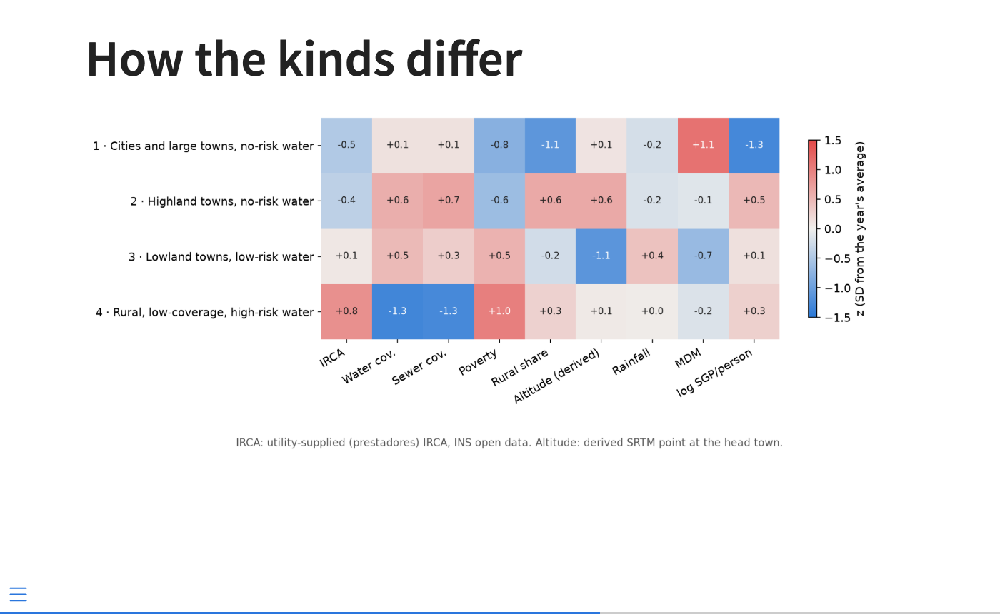
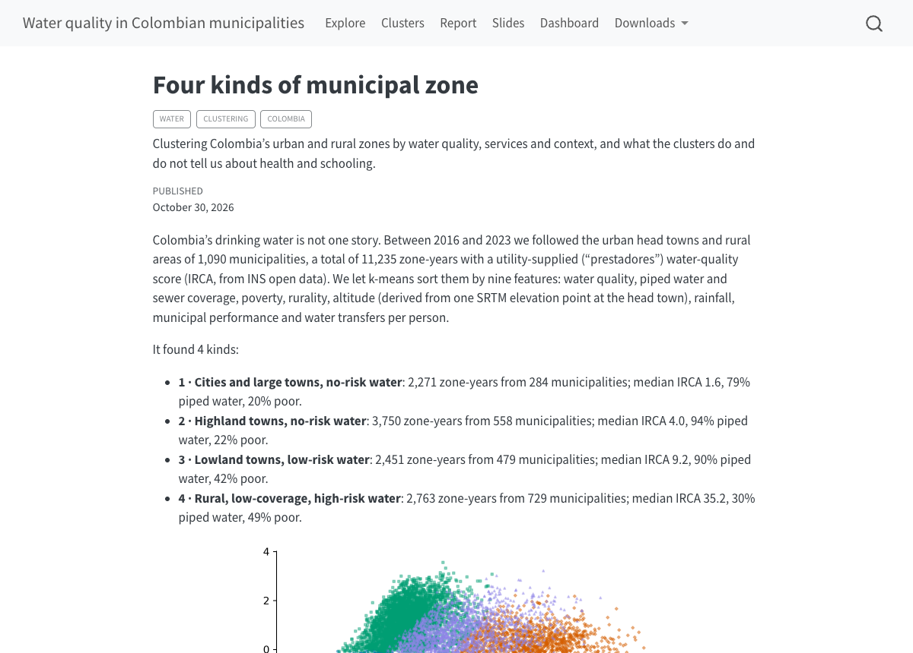

14 Publish Many
Quarto, reproducible publishing, coding assistants, Markdown, Python, EPUB, data analysis, k-means clustering
The officials will read the findings as a report, so they need it in the formats offices pass around: Word and PDF. The municipal council will see them on a screen in a meeting, and will look to the last slide for the conclusion. Both will look for where to act, and anyone else needs a link. So the project gets a report, slides and a website with a blog post, and not one of them may compute anything. Each reads outputs/, and that is what makes the chapter’s last test fair: change one setting in the analysis, predict what follows, rebuild, and check that every publication followed.
- Publish one set of results as a report in Word and PDF, slides for a council and, optionally, an EPUB, with no page recomputing the analysis.
- Configure a website that re-runs the analysis before every render, and explain what caching with
freeze: autowould miss. - Guard a sentence whose words depend on the data, and publish the site on GitHub Pages.
- Predict, check and explain which outputs a changed setting updates, and which it does not.
14.1 The report, in Word and PDF
Create report.qmd (formats html, docx, typst) from outputs/: summary, question, data (IRCA = utility-supplied prestadores IRCA), method, heatmap, outcomes, correlation ≠ causation (a chart of median infant_mortality by IRCA band per cluster), limits, sources. Matplotlib figures with captions and alt text; hide code. Render all formats; report errors.writes report.qmd · uv run quarto render report.qmd
open report.docx (Word or LibreOffice) and report.pdf
The prompt lists the report’s sections, and three of its choices carry the lessons of the last chapters. “Utility-supplied” is in the data section because Section 8.2 showed what the label hides. “Correlation ≠ causation” is a section, not a footnote. And the figures are matplotlib, because Word, PowerPoint and PDF cannot run the JavaScript that interactive Plotly charts need (Figure 14.1).
![The first page of the report PDF, titled Kinds of municipal zone in Colombia, with the subtitle Water quality, services, poverty and outcomes, 2016 to 2023: a descriptive cluster analysis. A summary in four bullet points says how many zone-years were grouped into four kinds, describes the highest-risk kind and the kind with the lowest infant mortality, and says the comparisons are descriptive and do not establish a causal effect of water quality. Then come the Question, the Data section, which names the utility-supplied IRCA, and the start of the Method.](../media/figures/water-report-p1.png)
examples/water/report.qmd.
Every number in the text is inline code reading outputs/, never typed: a report that quotes the number of kept rows quotes whatever the analysis last computed. You should have report.html, report.docx and report.pdf, each with the heatmap, the outcomes and the within-cluster figure.
Stuck for two minutes? Paste this into your assistant. It backs up your work and brings the project to this point; then carry on from here.
Catch me up: follow ../quarto-workshop/checkpoints/10-water-report/README.md14.2 Slides for the council
Create slides.qmd (revealjs and pptx) for the municipal council, 6 slides with the title: the question, a table of the named clusters, the heatmap, outcomes by cluster, what this does and does not show. Read outputs/, use matplotlib, hide code. Render both; count the slides.writes slides.qmd · uv run quarto render slides.qmd
open slides.html in your browser and slides.pptx in PowerPoint or LibreOffice
The assistant should count six slides in each, the title included. In both formats each ## heading starts a slide. A PowerPoint slide holds text, or one figure, or one table, so keep each slide to one thing. The council deck repeats the “descriptive only” message on its last slide, where a council will look for the conclusion (Figure 14.2).

examples/water/slides.qmd.
Stuck for two minutes? Paste this into your assistant. It backs up your work and brings the project to this point; then carry on from here.
Catch me up: follow ../quarto-workshop/checkpoints/11-water-slides/README.md14.3 The report as an e-book (optional)
In report.qmd, add an epub format (toc: true), set lang: en, and add ePub to the html `format-links`. Render report.qmd and check that report.epub contains the three figures and the sources.An EPUB is a zipped set of web pages whose text reflows to fit the reader’s screen. Most e-book readers do not run JavaScript, so figures must be static images, which the report’s already are. lang: en records the book’s language (without it the file declares an unknown one), and toc: true adds a table of contents. Open the result in Apple Books on a Mac or in Calibre: it should hold the three figures and the sources.
The book in your hands is the same thing at a larger scale, and building it showed where a report-sized EPUB stops being enough. Parts and part pages disappear from a Quarto book’s EPUB; content marked for HTML also appears in EPUB unless it is marked for HTML with JavaScript; Quarto’s built-in callout and code colours vanish on a reader’s night theme; and an EPUB checker rejects markup that every browser accepts. Appendix H describes each problem and its fix.
Stuck for two minutes? Paste this into your assistant. It backs up your work and brings the project to this point; then carry on from here.
Catch me up: follow ../quarto-workshop/checkpoints/12-water-epub/README.md14.4 A website with a blog
The publications become one website, with a blog post that tells the story in prose:
- 1
-
Every page, including a post in
posts/…/, readsoutputs/anddata/from the project folder. - 2
-
Quarto runs the analysis before every render, including a single page’s render:
outputs/is always fresh. - 3
- Every render re-executes every page, so every page shows the outputs just written.
# index.qmd
listing:
1 contents: posts- 1
-
A listing turns every
posts/*/index.qmdinto an entry on the home page: a blog.
Make this folder a Quarto website: _quarto.yml (execute-dir: project, `pre-render` scripts/analysis.py, freeze: false, render list, navbar), index.qmd listing posts/, and one post titled with the real k, e.g. "Four kinds of municipal zone". Render it; check the links.uv run quarto preview
The preview’s home page should list one post, whose title states the real k.
The post’s title states the number of clusters, so a change in the analysis could leave it wrong. The finished post protects itself with one line in its setup cell, assert k == 4, which fails the render if the analysis ever finds a different k (Figure 14.3). That line is a guard: it stops the render when a sentence’s words, not only its numbers, no longer match the data, because a loud failure is better than a quiet falsehood. This book guards its own sentences the same way. Section 12.4 says that the highest recorded infant mortality is not in the cluster with the worst water; if new data made that false, the book would stop building rather than print it.

examples/water/posts/four-kinds-of-municipal-zone/index.qmd.
14.4.1 Fresh or frozen?
freeze: false is the simple, safe setting: every render recomputes everything, so nothing can be stale. The cost is time, every render, for every page. freeze: auto is the alternative: Quarto stores each page’s results in _freeze/ and re-executes a page only when its own source changes.
The catch is in that last phrase. Quarto does not know which files a page reads, so a change to data/ or to outputs/ is not detected, and a frozen page keeps its old numbers. With freeze: auto you need a rule for throwing results away: delete _freeze/ (or render that one page directly, which ignores the cache) whenever the data or the analysis change.
Your site uses freeze: auto. You change MAX_MISSING in scripts/analysis.py and run uv run quarto render. Which pages show the new numbers?
Only pages whose own source changed, and you changed none. pre-render still rewrites outputs/, but every frozen page reuses its stored results, so the site shows the old numbers beside new output files until you delete _freeze/ or render each page on its own.
Start with freeze: false and switch only when renders become slow enough to matter, and when you do, write the invalidation rule down where the next person will find it. This book uses freeze: auto, so the EPUB rebuilds quickly and reproducibly, and its rule is written in its configuration and README: after any change to the examples’ data or analysis, run make book-fresh, which deletes _freeze/ and re-executes every chapter.
Stuck for two minutes? Paste this into your assistant. It backs up your work and brings the project to this point; then carry on from here.
Catch me up: follow ../quarto-workshop/checkpoints/13-water-website/README.md14.5 Publish it
Initialise a git repository here with a .gitignore for _site/, .quarto/, .venv/, outputs/ and *_files/. Replace README.md in this folder with a short one linking to https://<your-github-username>.github.io/water-quality/ and listing the files in the site's Downloads menu. Commit everything not ignored, then create a public GitHub repository named `water-quality` with gh and push to it. Set the repository's website to the same URL with `gh repo edit --homepage`. Show me the README and the website URL you set.approve gh · when it shows the website URL, in the second tab: uv run quarto publish gh-pages, then Enter at “Publish site … (Y/n)” · open the live address
The steps are Part II’s (Section 7.4), with one addition to the .gitignore: outputs/, which the pre-render step rebuilds. In a test run on 2026-11-01 the first publish took about two minutes, then GitHub Pages built the site in 20 to 35 seconds.
The data are public, and publishing them with the site is fine, provided the attributions travel with them. data/README.md lists each source’s terms: CC BY-SA 4.0 for DANE’s DIVIPOLA list and the INS, ICFES and MEN tables, CC BY 4.0 for TerriData and CHIRPS, citation terms for DANE’s population and boundaries, and none for SRTM. CC BY-SA adds a ShareAlike condition: anything built from those data, such as water_municipal.csv, must be shared under the same licence (CC BY-SA 4.0, checked 2026-11-12).
While it publishes: what is the difference between your folder and the live site?
The live site is the last _site/ you published. Changes in your folder, including re-rendered outputs, do not appear online until you publish again.
14.6 Change an input, explain the rebuild
This is the second task with no prompt supplied, and the test of this part’s design.
MAX_MISSING drops rows missing more than that many of the nine features (Chapter 10). To answer, you need to know which page reads what. Table 14.1 is computed from the finished project’s sources: a page counts as reading a file only if its code names it.
posts/four-kinds-of-municipal-zone/index.qmd.
| Page | Reads outputs/ |
Reads data/ |
Writes |
|---|---|---|---|
| index | none | none | html |
| explore | none | water_municipal.csv |
html |
| clusters | 8 files | none | html |
| report | 5 files | none | html, docx, pdf, epub |
| whitepaper | 6 files | none | |
| slides | 4 files | none | html, pptx |
| dashboard | 7 files | municipios.geojson |
html |
| the post | 4 files | none | html |
Every page but two reads its numbers from outputs/. The explore page reads only data/water_municipal.csv, which the setting does not touch, so it re-runs and shows the same numbers; the home page reads no files at all. A strong answer names the mechanism: pre-render re-runs the analysis, which rewrites every file in outputs/, and freeze: false re-executes every page that reads them. It checks at least two outputs against the new row counts. And it notices what did not change: data/, the explore page and the live site. Once your prediction is written down, check it against the model answer in Appendix E, which follows Tunja through the rebuild with the numbers computed (Table E.3).
14.7 A dashboard and a white paper (optional)
A dashboard can show the clusters on a map. The first prompt builds a Plotly choropleth, a map whose areas are coloured by a value, here each municipality by its urban zone’s IRCA band, with a year slider; the second adds pages for the kinds, the outcomes and the method:
Create dashboard.qmd (format: dashboard): a Plotly choropleth of the IRCA band of the "urban" rows of outputs/clusters.parquet on data/municipios.geojson (featureidkey="properties.divipola"), a year slider over their years (frames update only z), an itables table of outputs/clusters.parquet (maxBytes=0); end each chart cell with `fig`. Make it polished: IRCA bands in order from no risk to unfit, light to dark, with a legend, titled cards and readable labels. Add it to the navbar; render, check it looks good at laptop size and report errors.When the map page looks right, the second prompt adds the other pages:
Add Kinds, Outcomes and Method pages to dashboard.qmd from outputs/ only: a heatmap of cluster_profiles.csv's `z_` columns; outcomes_by_year.csv medians by `year` and `cluster`, and irca_infant.csv's ρ; k_selection.csv's inertia and silhouette by k. Use each cluster's `color` and axis units; say it is descriptive, not causal. Render; check each page at laptop size.
examples/water/dashboard.qmd.
Three traps, all met building the example. The boundary file follows the GeoJSON standard (exterior rings counter-clockwise) and Plotly expects the opposite, so without reversing the rings every municipality is drawn as “the world minus the municipality”, a grey rectangle; the finished script’s load_geojson() reverses them. Animation frames must update only the colours (z): if every year repeats the 2.7 MB of boundaries, the page balloons. And a dashboard cell shows every top-level expression, not only the last, so a bare fig.add_vline(…) draws the chart twice; assign it, fig = fig.add_vline(…), and end the cell with fig.
The searchable table needs maxBytes=0, or itables silently drops rows to keep the page small.
The same outputs can also become an academic paper, as London’s did (Section 7.6), now with numbered equations ($$ … $$ {#eq-kmeans}, referred to as @eq-kmeans) and citations of the papers behind each method:
Create whitepaper.qmd from outputs/: A4 Typst, "New Computer Modern"; an abstract (no inline code), numbered Introduction, Methods with equations, Results and Conclusions, then References via `#set bibliography(title: [References])`. Cite data/README.md's sources and the k-means, silhouette and ARI papers in references.bib; open each DOI. Add it to `render` and the "Downloads" menu; render; check equations and citations. Figures must be vector: set `fig-format: svg` and check that the files in `figure-typst/` end in .svg.“Open each DOI” is there for a reason: an assistant can produce a plausible reference that does not exist. A DOI is a document’s permanent identifier, and https://doi.org/ followed by it opens the publisher’s page, so it is a quick test that a reference exists. Ask the assistant to drop any reference it cannot open rather than guess, and check the reference list yourself. The finished paper cites Lloyd (1982) for k-means, Rousseeuw (1987) for the silhouette, Hubert and Arabie (1985) for the adjusted Rand index and Pedregosa et al. (2011) for scikit-learn, each checked against its publisher’s page on 2026-11-01.
examples/water/whitepaper.qmd.
Stuck for two minutes? Paste this into your assistant. It backs up your work and brings the project to this point; then carry on from here.
Catch me up: follow ../quarto-workshop/examples/water/README.md14.8 Further challenges
These have no checkpoints. Each extends the analysis with data already in the project, or names one that is not yet available:
- Moves between kinds. Count how municipalities’ zones move between clusters from 2016 to 2023, and draw it as a Sankey diagram (Plotly’s
go.Sankey). - Positive deviants. Find municipalities whose rural zone is in the high-risk kind yet whose recorded infant mortality is low, and check first whether that is small numbers, blanks or under-registration.
- Other clusterings. A Gaussian mixture model gives each row a probability per cluster instead of a hard label; HDBSCAN finds dense groups and leaves outliers unclustered. Do the kinds survive?
- A better outcome. Diarrhoeal disease in children under five is the outcome most directly linked to water. Its incidence is not in the open data of SIVIGILA, Colombia’s public-health surveillance system, which publish only deaths; the data’s README records it as a source to add when it becomes available.
Summary
- Every publication reads
outputs/and none computes, so one analysis reaches each reader in the format they use: Word and PDF for officials, slides for a council, a website for anyone. - Word, PowerPoint, PDF and most e-book readers cannot run JavaScript, so their figures must be static images.
pre-renderre-runs the analysis before every render andfreeze: falsere-executes every page, so nothing is stale;freeze: autois faster but cannot seedata/oroutputs/, so it needs a written rule for clearing_freeze/.- A guard turns a sentence that no longer matches the data into a failed render instead of a quiet falsehood.
- The live site is the last
_site/you published, and changes only when you publish again. - A changed setting reaches every page that reads
outputs/and nothing else: predict that, rebuild and check.
That last exercise holds the part’s design, and it is the book’s method at full size. The afterword takes it back to its three verbs, and to a project of your own.
Further reading
- Quarto, project scripts, freeze and website listings (checked 2026-10-30).
- Quarto, Reveal.js options, PowerPoint and EPUB options (checked 2026-10-30).
- Quarto, Dashboards (checked 2026-10-31).
- Quarto, cross-references and citations (checked 2026-11-01).
examples/water/README.mdin the repository: the finished project’s layout, rebuild steps and design decisions.